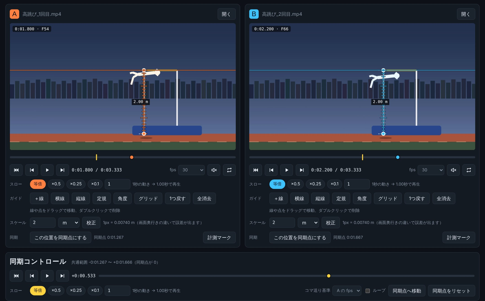
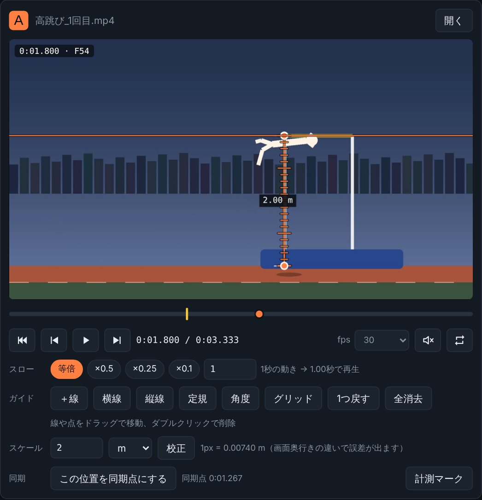
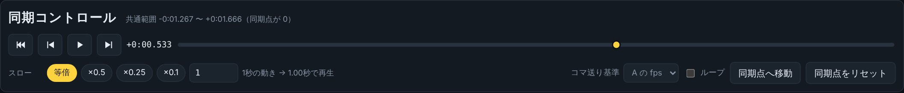
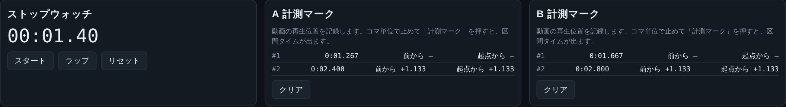

v1.0.0初回公開
2026年10月18日
- 2画面の独立した再生・コマ送り・シークバー・スロー（0.1〜4倍）
- ＋線・横線・縦線・角度・グリッド、実寸校正つきの定規
- 同期点を基準にした同期再生・同期コマ送り
- ストップウォッチと、動画の再生位置を記録する計測マーク
- Windows版：再生できない形式を同梱の ffmpeg で自動変換
Video comparison for sports
フォームの違い、踏み切りのタイミング、スイングの軌道。2本の動画を左右に並べ、コマ送り・スロー・同期再生で見比べられる、スポーツ動画のための比較プレイヤーです。

Features
再生・コマ送り・スローに加え、見比べるためのガイドや計測を最初から備えています。
画面ごとに再生/停止、1コマ送り・戻し、シークバー。fps は 23.976 から 240 まで選べ、29.97 や 59.94 の動画もコマ単位で追えます。
等倍・×0.5・×0.25・×0.1 のボタンと、0.1〜4倍の数値指定。「1秒の動きを何秒で再生するか」も表示します。
＋線、横線、縦線、角度、グリッド（3・6・12分割）。ドラッグで動かし、ダブルクリックで消せます。
長さの分かるものに定規を当てて実長を入力すると、以降は m・cm などの実寸で表示。目盛り付きです。
A・B それぞれで同期点を決めると、2本を揃えたまま同時に再生・コマ送り・シークできます。投球の離し際や踏み切りを基準にできます。
ストップウォッチと、動画の再生位置を記録する計測マーク。A と B の区間タイムの差も出ます。
Screens
画面はすべてアプリそのものです。動画はデモ用に作ったイラストで、実際の動画はお使いの端末の中だけで再生されます。

動画の下にシークバー、コマ送り、スロー、ガイド、スケール、同期の操作を並べました。黄色の目印はその動画の同期点です。
画面の上にある時刻は、いま表示しているコマの時刻とコマ番号です。
A・B の同期点を基準にした共通のシークバーです。同期再生、同期コマ送り、ループ、2本まとめてのスロー切り替えに対応します。

踏み切りから着地までなど、動画の中の区間をコマ単位で測れます。A と B の差も表示されます。

Guide
基本は「動画を開く → コマ送りで位置を決める → 同期点を決める → 同時に再生」です。
画面 A と B に、動画ファイルをドラッグ＆ドロップするか、右上の「開く」から選びます。
動画は端末の中だけで再生され、どこにも送信されません。
「スロー」の ×0.5 / ×0.25 / ×0.1 を押すか、数値を入力します。数値は 0.1〜4 倍まで指定でき、横に「1秒の動き → ◯秒で再生」と表示されます。
カメラからの距離が違う場所は、同じ換算では誤差が出ます。基準と同じ奥行きの場所を測ってください。
コマ単位で止めて「計測マーク」を押すと、その位置が記録されます。2つ以上マークすると区間タイムが出て、A と B の両方にあれば差も表示されます。
実時間を測るストップウォッチも、画面下にあります。
| キー | 動作 |
|---|---|
| Space | 2本を同期して再生 / 停止 |
| ← → | 2本を同期して1コマ戻る / 進む |
| Shift + ← → | 10コマ戻る / 進む |
| F11 | 全画面（Windows版） |
Updates
Download
Windows 版は、最初に1回だけセットアップします。ブラウザ版はインストールなしですぐに使えます。
Windows 10 / 11（64bit）・ 空き容量 約 400MB ・ 初回セットアップ時にインターネット接続（約 200MB）
セットアップをダウンロードv1.0.0初回起動で「WindowsによってPCが保護されました」と出たら、「詳細情報」→「実行」を押してください。署名のないソフトのため表示されます。完成した DualViewPlayer フォルダは、そのまま他のパソコンにコピーして使えます。
Chrome / Edge 推奨 ・ インストール不要
ブラウザで開くブラウザが対応する形式（MP4/H.264、WebM など）の動画を再生できます。再生できない形式を自動で変換する機能は、Windows 版にあります。
いいえ。動画はお使いの端末の中で再生・処理され、外部には送信されません。
Windows 版は、再生できない形式を自動で H.264/AAC の MP4 に変換して開きます（元のファイルは変更しません）。ブラウザ版は MP4（H.264）や WebM を使ってください。
Windows 版では、画面の「変換して開く」を押すと、音声も含めて変換して開き直します。また、音は初期状態でオフです。スピーカーのボタンで切り替えてください。
直接は使えません。代わりに ffmpeg が読める形式なら、変換して再生できます。H.265 は、Windows に HEVC の拡張機能やハードウェア対応があれば、そのまま再生できる場合があります。
fps の設定が動画と合っていないと、ずれます。29.97 fps や 59.94 fps の動画は、「30」ではなく「29.97」「59.94」を選んでください。